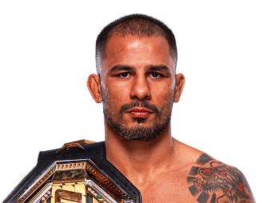
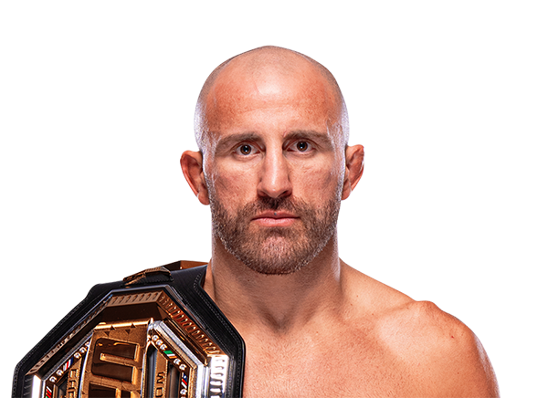
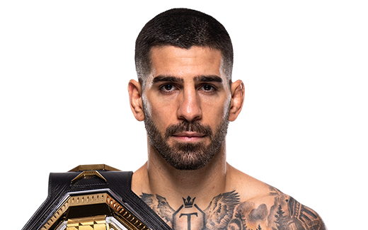
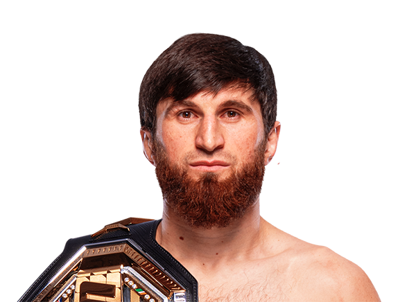

La UFC nació en 1993 como un experimento estadounidense, dominado por peleadores locales y brasileños. Treinta años después, el octágono es un laboratorio global donde atletas de más de 60 países se enfrentan, mezclando estilos, tradiciones y estrategias únicas.
¿Cómo ha cambiado el deporte con la llegada de nuevas nacionalidades? ¿El origen de un peleador puede anticipar su forma de pelear, su modo de ganar y hasta el ritmo de las peleas?
La diversificación del origen de los peleadores en la UFC, lejos de ser solo un dato anecdótico, ha modificado profundamente los estilos de combate, los métodos de finalización y la propia narrativa del deporte, desplazando la hegemonía tradicional de estadounidenses y brasileños.
¿Por qué esto es importante para la UFC?
El auge de peleadores de Eurasia, África, Asia y otras regiones trae consigo nuevas filosofías de combate y estrategias. Esta transformación no solo redefine la competencia: también abre el mercado global, multiplica audiencias y demuestra cómo el deporte puede ser un reflejo de tendencias sociales, migratorias y culturales más amplias. Con la relación entre geografía y estilo en la UFC es posible entender hacia dónde avanza el MMA y qué historias se esconden en sus datos.

¿Qué es la UFC?
La Ultimate Fighting Championship, más conocida como UFC, es la organización de artes marciales mixtas más grande y reconocida del mundo. Fue fundada en 1993 en Estados Unidos, y su idea original era enfrentar a peleadores de distintas disciplinas —como jiu-jitsu, boxeo, lucha olímpica o karate— para determinar cuál era la más efectiva en combate real.
Con el tiempo, los atletas comenzaron a mezclar técnicas de múltiples disciplinas, y así nacieron las MMA modernas: una combinación de golpes, derribos, sumisiones, y estrategia táctica. La UFC tiene su sede en Las Vegas, pero organiza eventos en todo el mundo: ha estado en países como Brasil, Canadá, Inglaterra, Japón, Emiratos Árabes, y también en Chile en 2018. Los combates tienen reglas claras: se dividen en tres o cinco rounds de 5 minutos, se puntúan con un sistema de 10 puntos, y se pueden ganar por nocaut, sumisión o decisión. Además, la UFC funciona con distintas categorías de peso, tanto para hombres como para mujeres, en donde cada división tiene su propio campeón.
Divisiones de Peso Masculinas
Peso mosca (hasta 125lb o 56.7kg)
Alexandre Pantoja
Peso Gallo(hasta 135lb o 61.2kg)

Merab Dvalishvili
Peso Pluma(hasta 145lb o 65.8kg)
Alexander Volkanovski
Peso Ligero(hasta 155lb o 70.3kg)
Ilia Topuria
Peso Wélter(hasta 170lb o 77.1kg)

Jack Della Maddalena
Peso Mediano(hasta 185lb o 83.9kg)

Dricus Du Plessis
Peso Semipesado(hasta 205lb o 93.0kg)
Magomed Ankalaev
Peso Pesado(hasta 265lb o 120.2kg)

Tom Aspinall
Tipos de Peleas de la UFC
En la UFC existen dos tipos de peleas principales según la cantidad de rounds y su contexto:
Peleas Regulares (No estelar)
Su duración es de 3 rounds de 5 minutos cada uno (con 1 minuto de descanso entre ellos).
Siempre son combates preliminares y de cartelera principal que no son de campeonato ni estelares.
Un ejemplo de esto es un combate entre dos peleadores en ascenso o en el ranking, pero sin título en juego ni lugar central en el evento.
Peleas Estelares o de Campeonato
Su duración es de 5 rounds de 5 minutos cada uno (con 1 minuto de descanso entre ellos).
Siempre son peleas por el título (campeonato mundial) o de Main Event, incluso sin un título en juego.
Un ejemplo de esto es un combate por el cinturón de peso ligero, o un duelo estelar como Poirier vs. Gaethje II.
Tipos de Finalizacion en la UFC
Los cuatro principales tipos de finalización en la UFC (es decir, las maneras más comunes en que una pelea puede terminar sin ir a decisión) son:
KO/TKO
Por definición un KO o TKO es cuando el oponente queda inconsciente (KO) o no puede defenderse inteligentemente (TKO).
Un ejemplo es un puñetazo, patada o rodillazo que deja fuera de combate al rival.
Estilo asociado a Strikers (peleadores con base en boxeo, kickboxing o muay thai).

Sumisión
Por definición una sumisión es cuando el peleador se rinde voluntariamente (tap out) o queda inconsciente por una llave o estrangulación.
Un ejemplo es una llave como el mata león (rear-naked choke), triángulo, palanca de brazo.
Estilo asociado a Grapplers (especialistas en jiu-jitsu brasileño, lucha olímpica o sambo).

Decisión Unánime (U-DEC)
Por definición una decisión unanime (U-DEC) es cuando los tres jueces dan la victoria al mismo peleador tras los 3 o 5 rounds completos.
Un ejemplo es un dominio claro, aunque sin finalización, con control, golpes y estrategia.
Estilo asociado a peleadores con un cardio elevado, control táctico, buen Fight-IQ y una defensa efectiva ante todo tipo de oponentes.

Decisión Dividida (S-DEC)
Por definición una decisión dividida (S-DEC) es cuando dos jueces favorecen a un peleador y uno al otro. Es una pelea cerrada.
Un ejemplo de esto son peleas competitivas, donde ambos conectan y los rounds son difíciles de puntuar. Son el tipo de pelea que levanta más dudas en el público y en los jueces.
Estilo asociado a peleadores de toda índole, son dificiles de determinar.

Diversificación y expansión global de la UFC
En 1993, la UFC era prácticamente un torneo entre estadounidenses y brasileños. Tres décadas después, la organización es verdaderamente global: antes de 2010 había visitado solo 7 países fuera de EE.UU. y hoy esa cifra se triplicó, con eventos y campeones en los cinco continentes.
El avance es tan notorio que, hacia 2021, 10 de 12 cinturones pertenecían a atletas nacidos fuera de Estados Unidos, con figuras africanas como Francis Ngannou, Israel Adesanya y Kamaru Usman dominando el octágono. La escena de Adesanya, nacido en Nigeria, alzando el cinturón ante 57.000 fanáticos en Australia, es el mejor símbolo de cómo la UFC rompió fronteras y abrió el octágono al mundo.
Este proceso de internacionalización incluyó la apertura de centros de entrenamiento en Asia y África, la legalización de las MMA en países tradicionalmente reacios como Francia, y la transmisión global de la UFC en 165 países y 40 idiomas. Hoy, la hegemonía estadounidense quedó atrás: el talento, los estilos y la audiencia son más diversos que nunca.

Origen de los peleadores de la UFC
El roster de la UFC está compuesto por 831 peleadores procedentes de Estados Unidos, lo que lo convierte en el país con mayor representación. Le siguen Brasil con 202 luchadores y Europa Occidental, donde se agrupan 144 competidores. En la región de América del Norte, incluyendo Canadá y México, figuran 84 atletas, mientras que Asia aporta 68 peleadores. Eurasia concentra 62 contendientes, Europa del Este 48 y Oceanía 46. El resto de las zonas geográficas suma cifras menores: los países nórdicos participan con 30 luchadores, Sudamérica (excluyendo Brasil) con 26, África con 11, los Balcanes con 10, Oriente Medio con 7 y el Caribe con 6 peleadores.
A nivel de países específicos, después de Estados Unidos (831) y Brasil (202) se sitúa Canadá con 67 peleadores, seguido de Inglaterra con 62. Rusia cuenta con 49 representantes y Japón con 37. Australia aporta 35 luchadores, mientras que Polonia y Suecia suman 23 y 22, respectivamente. México refuerza la delegación latinoamericana con 17 competidores, Francia con 15 y Corea del Sur con 12. Alemania e Irlanda están presentes con 11 y 10 peleadores, y China cierra el grupo de los quince países más activos en la UFC con 8 peleadores.
La duración promedio de las peleas ganadas varía notablemente entre regiones, siendo Eurasia la que alcanza los tiempos más altos en el octágono. Los peleadores de países como Rusia, Georgia, Kazajistán, Armenia y Uzbekistán tienden a completar combates de mayor extensión antes de asegurar la victoria, superando los 11 minutos de promedio. Este patrón se distingue de lo observado en Estados Unidos o Brasil, donde las victorias suelen llegar en menos tiempo.
El predominio de la lucha, el sambo y el control posicional en Eurasia es un factor fundamental detrás de este fenómeno. Los atletas de esta región suelen desarrollar estrategias que priorizan el desgaste progresivo del rival, el dominio de los espacios y la presión continua, en lugar de buscar definiciones rápidas por nocaut o sumisión. Figuras como Khabib Nurmagomedov, Islam Makhachev y Merab Dvalishvili —actual campeón de peso gallo— han consolidado la reputación de una escuela de combate que avanza ronda a ronda, asegurando el resultado a través de la superioridad técnica y física a lo largo del tiempo.
En contraste, Brasil y Estados Unidos presentan duraciones promedio inferiores, lo que se asocia a estilos más explosivos y orientados al striking o a la sumisión veloz. La tradición del jiu-jitsu brasileño y el boxeo o wrestling estadounidense propician desenlaces más inmediatos, ya sea por finalizaciones rápidas o por potencia de KO. Así, la diversidad de enfoques y tradiciones regionales no solo enriquece la competencia, sino que también influye en el ritmo y la dinámica de las peleas en la UFC.
Estilos de combate y orígenes geográficos
La UFC integra múltiples disciplinas marciales, cada una con características específicas que influyen decisivamente en el estilo de combate de sus peleadores
Brasil

Disciplina: Jiu-Jitsu brasileño
Estilo: Sumisión y control en el suelo
Ejemplo: Charles Oliveira
EE.UU.

Disciplina: Wrestling, boxeo y kickboxing
Estilo: Nocaut y control posicional
Ejemplo: Derrick Lewis
Eurasia

Disciplina: Sambo y lucha libre
Estilo: Grappling y control táctico
Ejemplo: Khabib Nurmagomedov
Asia

Disciplina: Muay Thai y Taekwondo
Estilo: Golpes espectaculares
Ejemplo: Zhang Weili
Finalizaciones según regiones de origen

Cada uno de los gráficos muestra los métodos más frecuentes con los que se ganan las peleas en UFC según la región de origen del peleador. Los patrones emergen con claridad: en Estados Unidos, los nocauts y las decisiones unánimes se imponen, reflejo de un estilo potente pero táctico, marcado por el dominio del wrestling y el boxeo. En Brasil, las sumisiones siguen reinando, como si el Jiu-Jitsu todavía respirara en cada guillotina y cada mata león ejecutado.
Por su parte, los peleadores de Eurasia (donde nació la lucha de sambo y el grappling soviético) ganan más del 70% de sus combates por decisión, ya sea unánime o dividida. Su objetivo principal no se basa en terminar rápido una pelea, y la visualización respectiva a esta región lo demuestra: prefieren controlar, presionar, desgastar. En Asia, aunque los números son menores, también se vislumbra un patrón: la decisión unánime aparece como vía favorita, en parte porque los strikers del continente (sobre todo en China, Corea o Japón) apuestan a la precisión técnica y al puntaje constante más que al nocaut inmediato.
Los datos obtenidos a partir de esta visualización refuerzan una idea que atraviesa toda esta investigación: la región no solo define el origen de un peleador, sino que muchas veces también define su estilo de combate, su estrategia, su filosofía de victoria. Son pequeñas culturas marciales codificadas en las estadísticas. En estas barras de colores hay historia, identidad y evolución.
Evolución de los métodos de finalización en UFC (2010–2024)
La evolución de los métodos de finalización revela una transición progresiva: hasta mediados de la década pasada, los nocauts y las sumisiones concentraban la mayoría de resultados, pero las decisiones unánimes han ido ganando peso, reflejando combates más cerrados y estratégicos. Paralelamente, las sumisiones crecieron de forma constante y las decisiones divididas registraron un aumento moderado.

Durante la primera mitad del periodo analizado, prevalecían los finales explosivos y las técnicas de suelo, rasgos de un roster aún dominado por especialistas en striking y jiu‑jitsu. A partir de 2016, las decisiones unánimes comenzaron a superar a los nocauts, señal de peleas más equilibradas que ponen a prueba tanto la resistencia como la versatilidad de los competidores.
Este cambio confirma que la integración de estilos diversos —wrestling, sambo, jiu‑jitsu y distintas escuelas de striking— ha elevado el nivel técnico de la UFC. Al enfrentarse a rivales cada vez más completos, los peleadores han tenido que ampliar su arsenal, reduciendo la frecuencia de conclusiones rápidas por KO y sumisión.
El resultado es un octágono más táctico y equilibrado, donde el dominio posicional y la estrategia inteligente cobran tanto protagonismo como la potencia física. Esta transformación consolida a la UFC como un fenómeno verdaderamente global y tecnificado. Actualmente, la empresa se ha diversificado globalmente. Entender su historia a través de los datos no solo revela patrones y tendencias, sino que nos invita a mirar el deporte como un fenómeno social y cultural en el que cada nacionalidad, cada estilo y cada finalización cuentan una parte esencial del relato global.